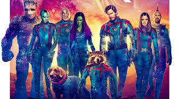
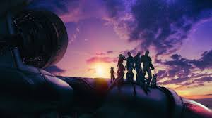

Los Guardianes de la Galaxia: La mejor triología de Marvel
 Bienvenidos al universo de los Guardianes de la Galaxia, un equipo de inadaptados intergalácticos que, contra todo pronóstico, se han convertido en los protectores más improbables del cosmos. Liderados por el carismático Peter Quill, también conocido como Star-Lord, este grupo heterogéneo de héroes ha salvado la galaxia en múltiples ocasiones, no siempre de la manera más convencional.
Su historia es un tapiz vibrante de aventuras, humor y momentos conmovedores, donde la amistad y la familia se forjan en las circunstancias más extraordinarias. Desde sus humildes comienzos como un grupo de forajidos, hasta convertirse en figuras clave en la lucha contra amenazas cósmicas, los Guardianes han dejado una huella indeleble en el vasto lienzo del espacio.
Cada miembro aporta una habilidad única y una personalidad distintiva, creando una dinámica caótica y profundamente efectiva. Rocket, con su sarcasmo explosivo; Groot, con su ternura de madera; Gamora, la guerrera silenciosa; Drax, la fuerza bruta con corazón; y Mantis, la extraña pero dulce telépata. Y claro, Star-Lord, el líder que mantiene unido al grupo... a su manera.
 A través de sus aventuras, han desafiado imperios, derrotado titanes y viajado a los rincones más oscuros del universo. Pero lo más importante, han aprendido a confiar entre ellos y a construir un hogar donde antes solo había caos. Esta web celebra ese legado: sus batallas épicas, su música inolvidable y la comedia que los hace únicos.
Prepárate para explorar un universo lleno de naves espaciales, enemigos formidables, planetas misteriosos y una banda sonora de los 80 que acompaña cada paso. Esta no es solo una historia de héroes: es la historia de cómo los marginados pueden salvar el universo si se mantienen unidos.
Aquí encontrarás información sobre cada miembro del equipo, sus hazañas más famosas, los villanos que han enfrentado, y mucho más. Sumérgete en esta odisea galáctica y descubre por qué los Guardianes de la Galaxia son una de las familias más queridas del universo Marvel.